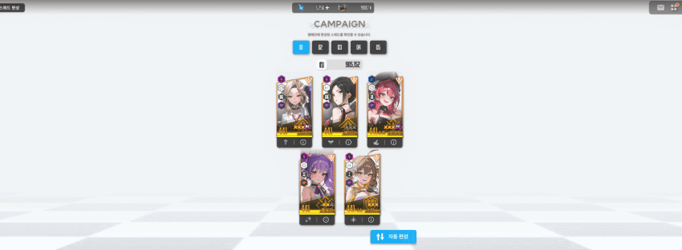
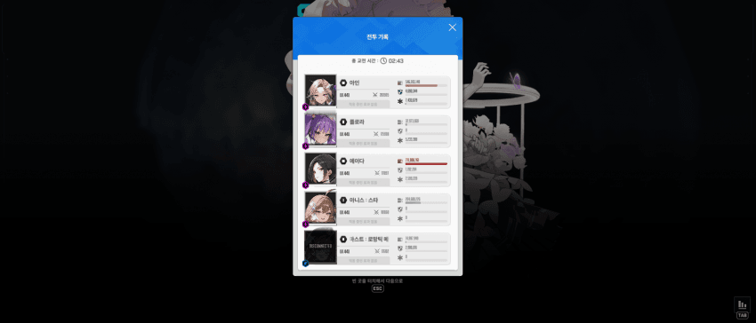

그건 바로 플로라 메스트를 쓰는거야
사실 크없찐용 공략은 아니고 성공한김에 신기해서 써봄
200줄대에서 42줄대까지 널뛰기 하는데, 진짜 딜 조금만 더 챙기면 밀거같고
모듈은 없기도 없거니와 아인 웡에 쓰고싶지도 않았음
애미타키나 없는 조합중에서 미컨 최저투력조합은 아크아플웡이고
886k선부터 시작함
그래서 나도 886k 동투력 맞추고 가봤는데
알고보니 아인 웡 둘다 4우코 아니고 3우코라 딜딸림
근데 말했듯이 얘네한테 모듈 쓰기 존나 싫어서 몸비틀어봤음
*
30프레임, 컷신 간단히
웡만 잡고 족자저지만 아인으로함
버스트는 무조건 메스트-아인 / 플로라-웡 붙여서 메스트 선버로
2페부터 아인은 겉절이라 웡한테 최대한 더 좋은 버프를 붙여야함
그리고 1페때 플로라 선버로 시작하면 메스트가 1페에 얼면서 버스트가 밀리는데 이러면 절대 못깸
다른 부가적 이유로 족자때 웡버스트 낭비안하고 적당하게 들어가기전에 아인 버스트페더좀 쑤셔넣을 수 있는 것도 한몫함

Q1. 속저 언제함?
최대한 빨리
나는 30프레임이라 그런지 톡톡이가 ㅈ같아서 조금씩 어긋났는데
아-웡-아-웡때 버스트 1~2초정도 남기고 양옆 속저나옴
그래서 톡톡이로 패스트버충 후 양저지 최대한 빠르게 깨주면서 아인페더딜 쑤셔넣고 저지들어감
Q2. 플로라는 40초고 메스트는 3번 쓰고나면 어는데 한턴 비잖아요?
A. 2페 첫 구두 나오기 전 고드름 날아오는 타이밍인데
이때 고드름 쳐맞은애가 개피로 살면 문제없이 마지막 발악 버스트까지 안꼬임
난 엄폐해두고 아니스 메스트쪽에 맞았고 메스트 개피로 살아서 문제없이 버스트 이어짐
Q3. 크라운 쓸땐 빙글빙글 저지탐 막버 우겨넣을때 18스택 모아둔거 풀면서 고드름 흡수 가능한데 이덱에서는 어케함?
A. 실용성없는 이유가 이건데 기도해야댐 딜모자라서 메스트든거라 쉴탐없어서 엄폐고 지랄이고하면 어차피 못깨서 그냥 메스트가 맞고 뒤지길 기도했음
이때 플로라-웡 타임이라 메스트 없어도 되거든
버스트 켜지기 전이라 나머지는 아무도 죽으면 안되고
메스트가 맞아서 뒤져주고 딱뎀으로 깼음
Q4. 네온 선데는 왜 안씀?
선데는 없고 기용하는 추세도 아님
네온은 확실히 1페때 딜꼬라지만 봐도 개쎈게 느껴지는데
아인 풀코라 일단 네온쓰면 투력자체가 내려가는게 좀 컸고
아-크-네-플-웡의 경우엔 최저투력 기준 족자저지가 좀 지랄임
2페때 네온이 의미없어서 웡한테 플로라 옮겨주려고 플대신 크라운 버스트 족자 들어가면
최저투력 비비는 사람 기준 플로라로 긁어도 족자저지가 안됨,
크라운은 당연히 안되고 나머지 셋은 저지하기 너무 까다로운 애들임
그리고 하드 최저투력 비비는 수준에서 네온쓰면 2페때 웡혼자 방무캐리하는게 안됨
아니스 뺄거 아니잖아 깡체급쌈이면 투력컷 한참 더오를텐데
*
걍 십예능용인데 타이밍 잘맞아서 깨진거고 크-플 쓰는 경우 공략
크플 사용하는 공략의 경우에는 간단함
플로라, 웡 힐때문에 패턴이 지랄맞은 구간이 없어서
순수 크리기도 말고 죽어서 리트하는 경우는 잘 없음
신경쓸건 마지막 빙글뱅글까지 가는 경우에
크라운을 30초대쯤에 날라오는 고드름을 18스택 모으고 있던거 풀면서 몸으로 받아내고
풀버 진입상태에서 살아있는 채로 막버 굴리기밖에 없는듯
쫌쫌따리 1스 패시브용으로
나같은 경우에 1페때 플로라를 아인에 붙였다가 2페 족자 들어갈때는 크라운-아인으로 쓰고 플로라를 웡한테 자연스럽게 넘겨주려 했는데
이것도 한번 트라이해보삼 아인을 쓰면 족자가 존나 편해서 좋아
나는 둘다 3우코라서 한쪽이 우코 유의미하게 더 높은 경우는 걔한테 플로라를 붙여주면 될 것 같지만
비슷한 경우에는 전체 딜량은 2페때문에 늘 웡이 높게 나오는데도 아인에 플로라 붙여주고 선버 스타트 하는 쪽이 묘하게 더 높게 나오는 느낌이었음
*
3줄요약
1.딜이 딸리면 이딴거 따라하지말고
2. 좀 더 자고 4우코 맞추고 크라운써라
3. 리트 편의성이나 딜이나 여러모로 메스트보다는 크라운 플로라가 최저투력 조합에서 훨씬 낫다.